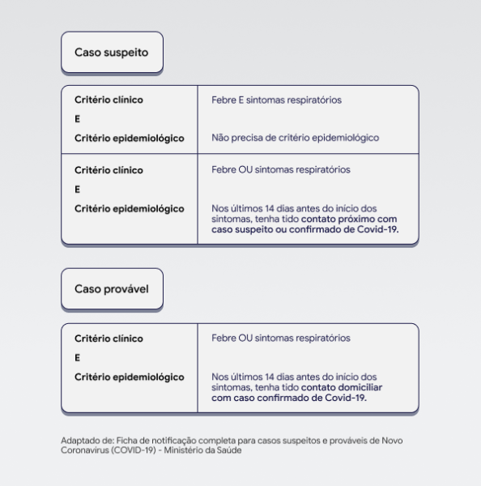

<!DOCTYPE html>
<html lang="en">
<head>
    <meta charset="UTF-8">
    <meta name="viewport" content="width=device-width, initial-scale=1.0">
    <title>Portal sobre o  Coronavírus </title>       
    <link rel="stylesheet" href="https://fonts.googleapis.com/css2?family=Quicksand:wght@500&display=swap" >
    <link rel="stylesheet" type="text/css" href="css/index.css">
</head>
<body>
    
</html>
<h3><strong>Notificação</strong> </h3>

<div class= "voltar">
    <a href="index.html">Voltar</a></li>
</div>
<br>
<br>

<p> Os casos suspeitos, prováveis e confirmados devem ser notificados pelo profissional de saúde responsável pelo atendimento. 
    As informações devem ser inseridas nesta ficha de notificação. Para os estados com número grande de casos, porém, a orientação 
    do Ministério da Saúde é que o tratamento de casos graves é mais importante que a notificação, por isso pessoas com síndrome gripal
     que não estejam graves são orientadas a não buscar um posto de emergência, realizando apenas o isolamento social.</p>
     <br>

      

   
     <br>
     

     <div class="rodape">

        <h5>Desenvolvido por @Camila Duque</h5>
  
    </div>


</div>
</body>
</html>